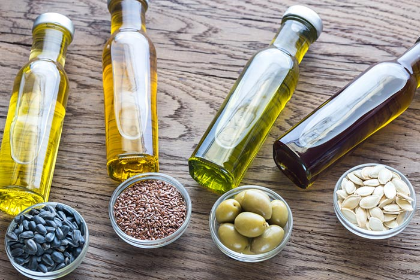

สารอาหาร 5 หมู่
ไขมัน
( Fat )

อาหารหมู่ที่ 5 ได้แก่ ไขมันจากปลา เช่น ปลาทู ปลาช่อน ไขมันจากสัตว์ เช่น น้ำมันหมู น้ำมันตับปลา หรือไขมันจากพืช เช่น น้ำมันถั่วเหลือง น้ำมันจากธัญพืช น้ำมันปาล์ม น้ำมันมะกอก น้ำมันอะโวคาโด หรือน้ำมันมะพร้าว ซึ่งไขมันเหล่านี้จัดเป็นแหล่งพลังงานสำคัญของร่างกาย มีคุณประโยชน์ในด้านให้ความอบอุ่นแก่ร่างกาย แต่ทั้งนี้ก็ควรรับประทานไขมันอย่างพอเหมาะ
กลับจ้า
ปุต่อ